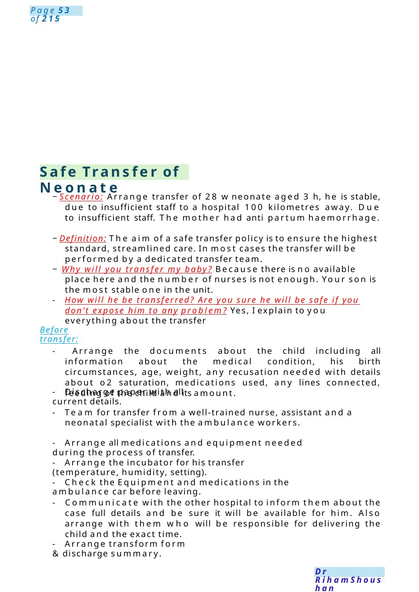
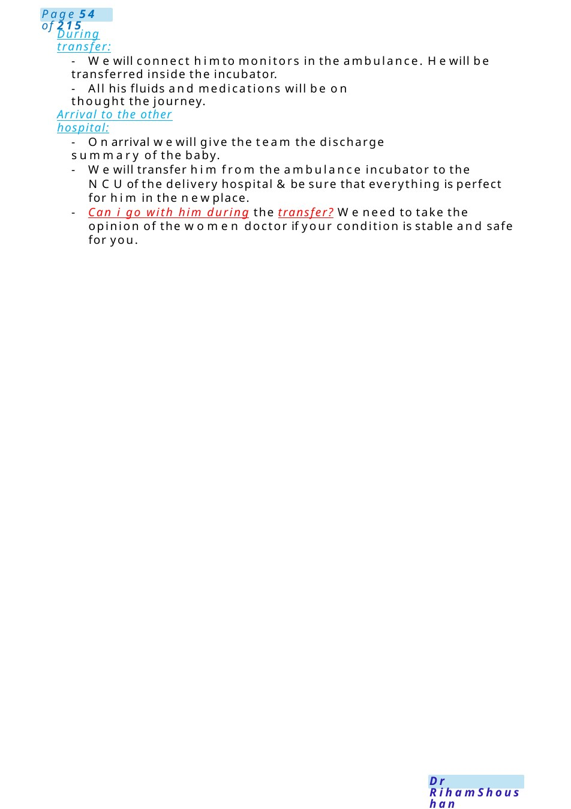

Safe Transfer of Neonate
−Scenario: Arrange transfer of 28 wneonate aged 3 h, he is stable, due to insufficient staff to a hospital 100 kilometres away. Due to insufficient staff. The mother had anti partum haemorrhage. −Definition: The aim of a safe transfer policy is to ensure the highest standard, streamlined care. In most cases the transfer will be performed by a dedicated transfer team.
Scenario Summary
−Scenario: Arrange transfer of 28 wneonate aged 3 h, he is stable, due to insufficient staff to a hospital 100 kilometres away. Due to insufficient staff. The mother had anti partum haemorrhage. −Definition: The aim of a safe transfer policy is to ensure the highest standard, streamlined care. In most cases the transfer will be performed by a dedicated transfer team.
Full Original Scenario

Safe Transfer of Neonate
−Scenario: Arrange transfer of 28 wneonate aged 3 h, he is stable, due to insufficient staff to a hospital 100 kilometres away. Due to insufficient staff. The mother had anti partum haemorrhage.
−Definition: The aim of a safe transfer policy is to ensure the highest standard, streamlined care. In most cases the transfer will be performed by a dedicated transfer team.
− Why will you transfer my baby? Because there is no available place here and the number of nurses is not enough. Your son is the most stable one in the unit.
- How will he be transferred? Are you sure he will be safe if you don't expose him to any problem? Yes, I explain to you everything about the transfer
Before transfer:
- Arrange the documents about the child including all information about the medical condition, his birth circumstances, age, weight, any recusation needed with details about o2 saturation, medications used, any lines connected, feeding of the child and its amount.
- Discharge paper with all current details.
- Team for transfer from a well-trained nurse, assistant and a neonatal specialist with the ambulance workers.
- Arrange all medications and equipment needed during the process of transfer.
- Arrange the incubator for his transfer (temperature, humidity, setting).
- Check the Equipment and medications in the ambulance car before leaving.
- Communicate with the other hospital to inform them about the case full details and be sure it will be available for him. Also arrange with them who will be responsible for delivering the child and the exact time.
- Arrange transform form &discharge summary.

During transfer:
- Wewill connect himto monitors in the ambulance. Hewill be transferred inside the incubator.
- All his fluids and medications will be on thought the journey.
Arrival to the other hospital:
- Onarrival wewill give the team the discharge summary of the baby.
- Wewill transfer him from the ambulance incubator to the NCUof the delivery hospital &be sure that everything is perfect for him in the newplace.
- Can i go with him during the transfer? Weneed to take the opinion of the women doctor if your condition is stable and safe for you.

Ambiguous/ Undifferentiated Genitalia in a Newborn
Communication Scenario about Ambiguous/ Undifferentiated Genitalia in a Newborn
Task: Candidate Instructions: You are the paediatric trainee in NICU. Please talk to Miss Nada, who delivered yesterday. During examination of the baby, the genital appearance is not clearly male or female.
Candidate: Hello Miss Nada, I’m Dr............,one of the baby doctors looking after your baby. First of all, congratulations onyour delivery. I understand this maybe a very stressful and unexpected time for you. Is this a good time to talk? Would you like your partner or a family memberto be present?
Explore Understanding Before I explain things, can you tell mewhat you have already been told so far?
Mother: “Doctor, the nurses told methere is a problem with mybaby...what is happening?”
Breaking the News:Candidate: Thankyoufor sharing that. Whenweexamined your baby, wenoticed that the genital area is not clearly developed in the usual male or female appearance. At the moment, we cannot safely confirm the baby’s sex immediately after birth. I understand this is upsetting and confusing news, and I’m very sorry you are going through this.
Mother with Emotional tone: Shocked, Tearful, Worried about gender, future, and family reaction. Wants clear but sensitive explanation
Reassurance: Candidate: The most important thing is that your baby is stable, breathing well, and we are closely monitoring his blood salts and blood pressure carefully. This condition can happen for several medical reasons, and many babies do very well once we identify the cause and provide the right treatment. Importantly, this is not caused by anything you did during pregnancy.
Explanation of Causes: Candidate: Normally during pregnancy, chromosomes which are steak like structures responsible for our features (2 pairs of them are X & Y are responsible for sex identification), hormones, and reproductive organs develop together to form male or female private area configuration or wecall this area genitalia.
Sometimes there can be differences in this development, leading to genital appearance that is not clearly male or female at birth.